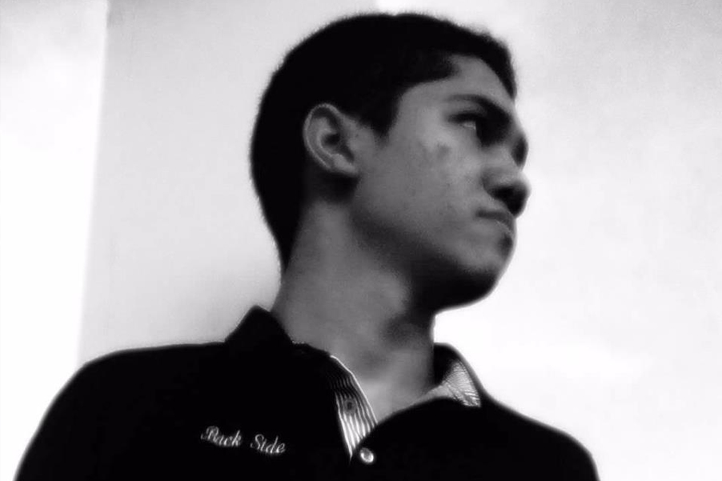

- - NOSSOS PROFESSORES - -
-
Davi Costa

Mestre em Engenharia de Teleinformática pela UFC. Graduado em Sistemas de Informação pela FA7.
Coordenador do Núcleo de Desenvolvimento de Sistemas de Informação (DESI). Editor do Catálogo de Software da FA7 e da revista eletrônica INCLUDE[SI]. Tem experiência na área de Ciência da Computação, com ênfase em Engenharia de Software. -
Dario Gabriel
Leciona em cursos de graduação, pós-graduação e extensão desde 2019. Além da docência, atua no mercado profissional desde 2018, acumulando vários anos de experiência em desenvolvimento de sistemas e gerenciamento de projetos, além de ter exercido diversos cargos de gestão.
Atualmente, é funcionário do Banco do Nordeste do Brasil e Coordenador da Graduação em Sistemas de Informação e da Pós-graduação em Arquitetura, Design e Implementação de Sistemas para Internet da Faculdade 7 de Setembro. -
Emerson Iago
Mestre em Ciência da Computação pela UFC. Graduado em Ciência da Computação pela UECE.
Coordenador do Curso de Especialização em Desenvolvimento de Sistemas Para Dispositivos Móveis. Analista de Sistemas Sênior no Instituto Atlântico. -
Dani Andrade
Mestre em Informática pela UNIFOR. Especialista em Ciências da Computação e Economista pela UFC. Graduada em em Ciências Econômicas pela UFC.
Atualmente é Secretária de Tecnologia da Informação do Tribunal de Justiça do Estado do Ceará e professora da Faculdade 7 de Setembro. Tem experiência nas áreas Financeira, Creditícia, Recursos Humanos e Tecnologia da Informação.